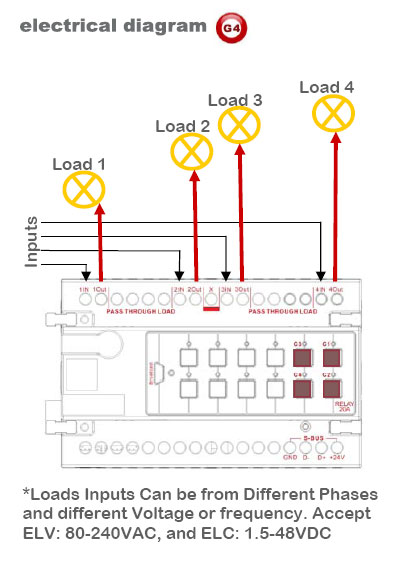
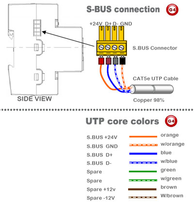

Smart-Bus Relay 4ch 20Amp /ch, DIN-Rail Mount (G4) - SB-RLY4c20A-DN
GTIN (UPC-EAN): 0610696253897
Smart-Bus Relay 4ch 20Amp /ch, DIN-Rail Mount (G4) - SB-RLY4c20A-DN
Description
DIN-Rail Mount Switched Pass Through Relay 4ch 20A /per ch. Multi Phase, Multi-Current, Multi voltage. Software Selectable programmable 3 Phase Protective function: Grouping. Work 220/110 VAC, 50-60Hz as well as 1.5-48VDC (Green operated supplied by 24VAC/20mA) Small and elegant with easy labeling space, output status LED indicator, network health, broadcast address button and Momentary channel button. Can be used in any location that require energy saving, intelligent control such as apartment, Villa, Offices, Restaurant, Hotels or factories.
*Can be Manually Programmed by any Electrician on site without need for PC.
** (This is an Advanced 2-way module. Changing load status manually reflect and update on all Connected SW & Devices)
Load Compatibility
• All Types of Lighting
• Water Boilers
• HVAC UNITS
• Water Pumps
• OVENS
• Heavy Motors
Connection Port:
 - SB-RLY4c20A-DN - GTIN (UPC-EAN): 0610696253897 Connection Port")
WHY G4 (GENERATION-4) IS BETTER? RELAY MODULES (4CH, 6CH, 8CH, 12CH)
Relay Control Modules |
Old Smart-BUS |
New S-BUS G4 |
Din Rail and Wall Mountable Installation |
Only DIN |
Both |
S-Connector Technology (No Bus Wiring inside DB Train Line) |
Not Possible |
Available |
Easy to See Network Status LED for Health and Problems for dressed DB |
Not Possible |
Available |
Upgrading without opening the Device |
Not Possible |
By Mini USB |
Ability to Snap Connect/Disconnect Cables |
Not Possible |
Snap In Connector |
Ready with up to 12 Channels on single Module |
Not Possible |
Available |
PCB Electronics Design Complexity |
Random |
Organized |
Colors Distinguisher Face Plates (to know which product is which) |
Not Available |
Available |
Updated Channel Operation status on DLP and SW if Manually Changed |
Not Available |
Available |
Work on Both BUS and Cloud Technology |
Not Possible |
Possible |
Programming and Pairing Manually to DDP, FDP, 6B,4B,3B |
Not Possible |
Easy |
Easy Backup and Restore using Configuration SW |
Not Available |
Available |
well designed Air cooling Vents at Back and front and Side of Module |
Standard |
Advanced, Double efficiency |
Big Easy Label Space for Installer labeling |
Small, Not Easy |
Visible and Wide |
Genuine Patent and Brand Embedded into all Parts and Plastics |
Not Available |
Available |
Genuine Product Barcode GTIN, and Holographic Label Distinguisher |
Not Available |
Available |
All Other Standard Smart-BUS Advanced Automation Features |
Included |
Included |
TECHNICAL DATA:
Supply Outputs Maximum Total Load Control IO Upgrade IO User Controls Programming Compliance |
Internal Protection Preset and Scenes Installation SBUS DC Supply Supply Terminals Output Terminals Operating Environment Enclosure & Size Dimensions & Weight |
Q. Do we have to de-rate because of Spark effect when we design electrical digial Relays control panels DRP or Dimmer Panels DDP?
A. No. you do not have to de-rate. We have done this for you already when we have designed the Relays and Dimmers at our R&D labs. (To be on safer side, all you need is to accurately calculate the load based on your country Electrical Voltage and constant fluctuations if any)
Q. How does a relay work?
A. Relay is an electromagnetic device, within which an electro magnet (sometimes called a motor) is fixtured to cause controlled movement either by magnetic attraction or magnetic repulsion. Other hardware attached to the moving magnetic portion of the motor such as relay contacts will cause switching of electrical circuits.
Q. Why use a relay vs a circuit breaker or switch?
A. RELAY is An electromagnetic device for remote or automatic control that is actuated by variations in conditions of an electric circuit and which, in turn, operates other devices (such as switches) in the same or a different circuit.
Q. What is CIRCUIT BREAKER?
A. it is s switch that automatically interrupts an electric circuit under an infrequent abnormal condition; e.g., a fault condition such as an overload or rupture of either high voltage or high current or both.
Q. What is a SWITCH?
A. Switch is A device for making, breaking, or changing the connections in an electrical circuit. Usually mechanical and operated by hand.
Q. What happen if we put big power supply more than 2A/24VDC ( Note: In Clipsal Schneider case, we damage network if we do that.) so will that also similarly damage the dimmers in smart bus case?
A. No, there is no harm at all, the S.BUS is designed with high flexibility and good amount of protection. You can add big power supply as you like, in example 30A/24VDC for even bigger Amp. to one dimmer or relay with only one switch.. the s.bus will still function perfectly. Smart-BUS is designed way differently compared to other manufacturers.
Q. What is the maximum voltage that the smartbus can take before it burns its chip?
A. 45 VDC max
Q. What happen to the bus chip if all the wires of the bus Are shorted?
A. Mostly nothing because s-bus is protected, and once the short circuit issue is resolved then sbus should function normally.
Q. Can we use electric cables instead of data cables to communicate between bus in case we have no data cables?
A. Yes, you can use any conductor cable which is brass, that should work fine.
Q. How long the Smart-BUS wire can be?
A. we tested the BUS as far AS 1200 meters of distance and found operational. (Bigger Conductor is needed for Power in such case)
Q. Does every S-BUS relays have scenes built into the module, or we have to buy scene controller?
A. No need to buy any extra modules, each relay has scene and sequence function built in. Smart-Group always adds all needed features as possible inside same module to help save money, time, space and environment.
Q. How many relays can be connected with the Train connecter that is built in the relay Module?
A. from experiment, we had no limitation; you can connect as many as you can inside the DP on Single DIN-rail. In case you have multiple Din-Rails, please bridge using side S-BUS Connector.
Q. what happens if communication BUS voltage drops below 24VDC, and what happen if it exceed that? (Question case example: in Dynalite case, the running BUS voltage is 12VDC, but we usually lose data communication if it drops below 10VDC, and network cards burn in case voltage is more than 15VDC)
A. In Smart-BUS case, the recommended working voltage is 24VDC, there is tolerance between 10-32 volts with perfect operation. If voltage drop below 8VDC then communication might be lost, and if voltage exceeds 45VDC then also S-BUS network ports will burn. When we designed the smartHome-BUS, we made it as bullet proof as possible with maximum voltage change flexibility imaginable at any normal case.
Q. What is radio frequency interference (RFI)?
A. RFI is a buzzing noise that may occur in some audio and radio equipment when solid-state dimmers are used nearby. Although every Smart-Bus dimmer contains a filter to suppress RFI, additional filtering may be required in some applications. Typical examples of RFI-sensitive equipment are AM radios, stereo sound systems, broadcasting equipment, intercom systems, public address systems, and wireless telephones.
Q. Doesn't turning the lights on and off so quickly decrease bulb life?
A. No. Switching the bulb does not decrease bulb life; heat decreases bulb life. By reducing heat, bulb life is increased.


Softwares and Firmwares
Applications
• Homes
• Hotels
• Restaurants
• Luxury Boats
• Schools
• Factories
• Prayer Halls
• Commercial Centers